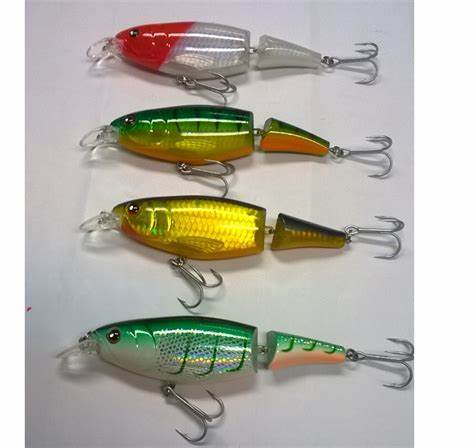

Los rotativos son los indicados para pescas de fuerza, no solo por su mayor posibilidad de carga de nailon o multifilamento sino porque el “efecto malacate” de recoger una manija haciendo girar el eje horizontal que enrolla nos ayuda en la tarea, mientras que la fuerza de manija del rotativo se ejerce sobre un eje en sinfín que gira verticalmente.
Caña de acción suave. Por su pequeña consistencia es ideal para lanzados cortos y pescar peces de pequeño tamaño.

En la pesca, los señuelos se utilizan para atraer a los peces y hacer que se acerquen al anzuelo. Para ello, se lanzan los señuelos al agua y se realiza una serie de movimientos que imitan los movimientos de una presa.